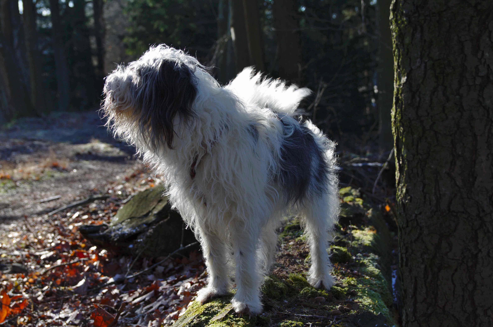
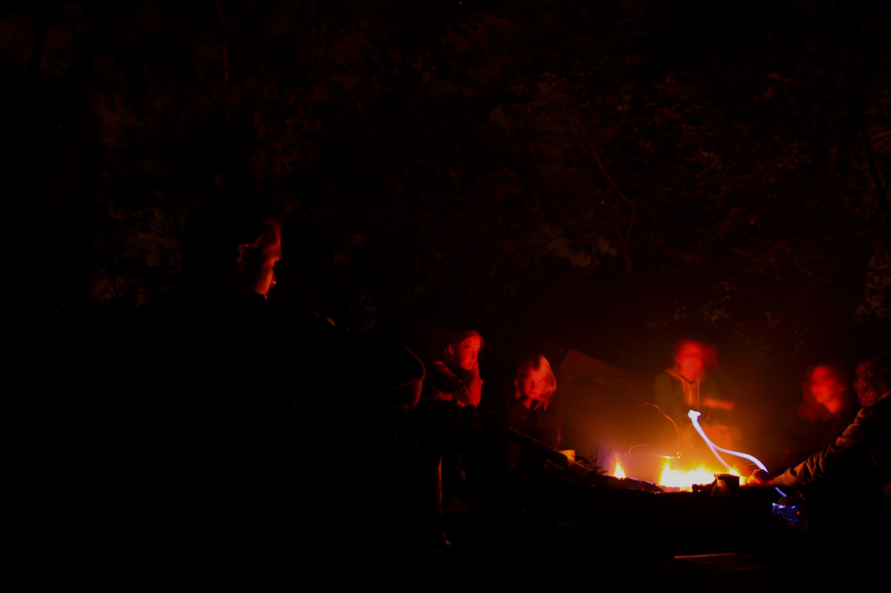
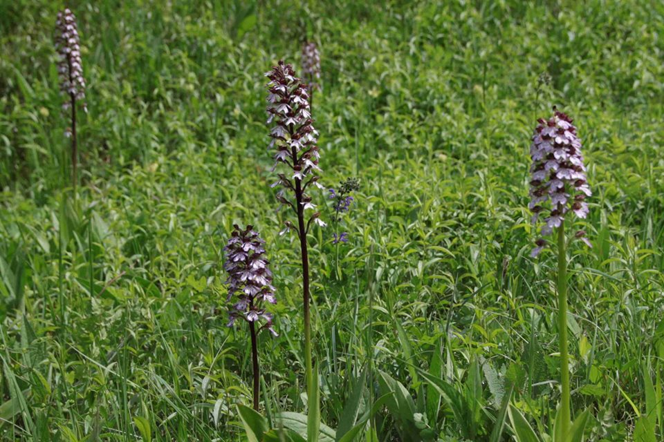

Atumn soltice 2019!
We wuld like to kindly invite you on Atumn soltice party 2019!
Food and drinks will be availible.
At 3. 9. from 18:00 at Benátská 2.
More information on facebook .

Fyt-pop-kurz 2019
20.-25. 5. 2019 was course of phytocenology and plant population biology placed in Velemín.
Nore information here.

Excoursion vegetation of Central Europe 2019
8.-12. 5. 2019 took place the Excoursion vegetation of Central Europe. The excursion visits South Bohemia. More info here

New websites and facebook
Our unit has new website and facebook: here
Exkurze 2019
Spring excursions to neighbourhood of Prague
program for 2019 zde
Floristic-ekcological excursions
program for 2019 zde